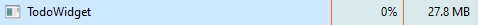

Studio Workbench
A clean 3-pane workspace with Collections, Task Canvas, Details Inspector, and a bottom activity dock for quick entry and sprint timers.
A quiet, native Windows desktop widget and focus workbench. Built in pure C# and WPF so your tasks stay right on your wallpaper using ~28 MB of RAM — no Electron, no browser tabs, no noise.
Everything you need to keep your focus, without turning into a second job to maintain.
A clean 3-pane workspace with Collections, Task Canvas, Details Inspector, and a bottom activity dock for quick entry and sprint timers.
Keep your checklist pinned directly to your desktop wallpaper behind open windows, or float it on top with custom opacity and corner snapping.
Scans your installed apps and blocks distractions during deep focus sessions. Non-destructive by design — everything works normally the moment you stop.
Link a personal access token with Gist scope to sync your tasks, daily streaks, and preferences across Windows PCs with zero third-party servers.
Record quick voice notes straight onto any task and set recurring weekly schedules with 12-hour AM/PM reminders and snooze actions.
Checks GitHub Releases automatically, downloads updates in the background, installs silently, and restarts right where you left off.
Most desktop productivity apps wrap an entire Chromium browser just to show a checklist. To-Do is written in pure C# and WPF on .NET 8, so it uses native Windows rendering and stays out of your way.

Built iteratively with real feedback.
Database batching on reminder scans, duplicate process guard in App Blocker, and official website portal with automatic release detection.
Complete UI overhaul with a 3-pane layout, Collections Explorer, Details Inspector rail, bottom Timeline Dock with 2m/25m sprint timers, and startup stability fixes.
Installed-app scanner, drag-and-drop executable blocking, common distraction presets, strict focus lock, and non-destructive process monitoring.
Free cross-device sync via private GitHub Gists, daily streak tracking, integrated progress bar, and background auto-updates.
A quick note on Windows SmartScreen and data privacy.
To-Do is an independent open-source project without an expensive commercial EV code-signing certificate. When you run the installer for the first time, click More info and then Run anyway. You can also inspect or build the full source code from GitHub.
Everything is stored locally on your machine using an embedded LiteDB database. If you enable GitHub Sync, your tasks and streaks are saved only to a private Gist on your own GitHub account.
No. Focus Mode monitors processes strictly in memory. The moment you turn Focus Mode off, every blocked app opens normally again.